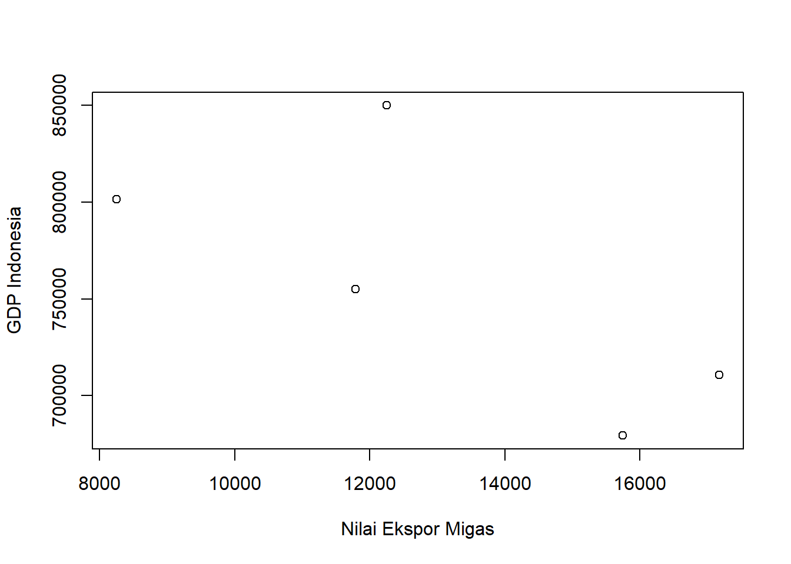
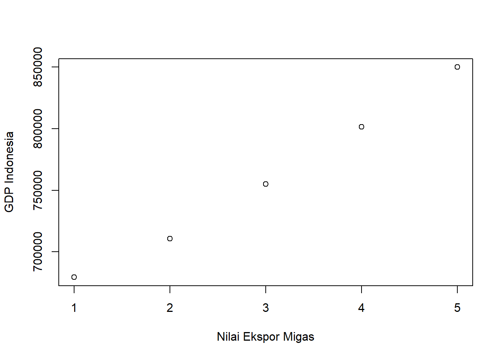

library(tidyverse)
library(readxl)
library(WDI) PENGARUH EKSPOR MIGAS TERHADAP NILAI PDB INDONESIA PADA TAHUN 2017-2021
Tugas Pengganti UAS Metodologi Penelitian Politeknik APP Jakarta
.jpg)
1 Pendahuluan
1.1 Latar belakang
Latar belakang penelitian ini adalah untuk mengetahui pengaruh ekspor migas terhadap Produk Domestik Bruto (PDB) Indonesia pada periode 2017-2021. Ekspor migas merupakan salah satu sumber devisa utama bagi Indonesia, namun harga minyak dunia yang fluktuatif dapat mempengaruhi nilai ekspor migas. Oleh karena itu, perlu dilakukan penelitian untuk mengetahui seberapa besar pengaruh ekspor migas terhadap PDB Indonesia. Hasil dari penelitian ini diharapkan dapat memberikan informasi yang berguna bagi pemerintah dan industri migas dalam menentukan kebijakan dan strategi untuk meningkatkan nilai ekspor migas dan kontribusi terhadap PDB Indonesia.
1.2 Ruang lingkup
Ruang lingkup penelitian ini adalah pengaruh ekspor migas terhadap Produk Domestik Bruto (PDB) Indonesia pada periode 2017-2021. Penelitian ini akan menganalisis bagaimana perubahan volume dan nilai ekspor migas dari tahun ke tahun mempengaruhi PDB Indonesia. Hasil dari penelitian ini diharapkan dapat memberikan rekomendasi bagi pemerintah Indonesia untuk meningkatkan kontribusi ekspor migas terhadap peningkatan PDB di masa yang akan datang. Dalam penelitian ini akan menggunakan data-data yang dapat diperoleh dari BPS serta sumber lain yang relevan. Penelitian ini akan menggunakan metode analisis statistik dan ekonometrik untuk menganalisis data yang diperoleh dan menyajikan hasilnya.
1.3 Rumusan masalah
Rumusan masalah dari penelitian ini adalah :
Bagaimana pengaruh ekspor minyak bumi dan gas (migas) terhadap nilai PDB Indonesia pada periode 2017-2021 ?
Bagaimana kebijakan dan strategi yang dapat diterapkan untuk meningkatkan nilai ekspor migas dan kontribusi terhadap PDB Indonesia?
1.4 Tujuan dan manfaat penelitian
Tujuan dari penelitian ini adalah:
Untuk mengetahui pengaruh ekspor migas terhadap Produk Domestik Bruto (PDB) Indonesia pada periode 2017-2021.
Untuk menyusun rekomendasi kebijakan dan strategi untuk meningkatkan nilai ekspor migas dan kontribusi terhadap PDB Indonesia.
Manfaat dari penelitian ini:
Memberikan informasi yang berguna bagi pemerintah dan industri migas dalam menentukan kebijakan dan strategi untuk meningkatkan nilai ekspor migas dan kontribusi terhadap PDB Indonesia.
Dapat dijadikan sebagai dasar referensi bagi penelitian sejenis di masa yang akan datang.
Dapat digunakan oleh akademisi dan praktisi dalam bidang ekonomi dan migas untuk menambah wawasan dan meningkatkan kualitas penelitian.
1.5 Package
2 Studi pustaka
Produk domestik bruto (PDB) atau produk domestik bruto (PDB) adalah istilah yang digunakan untuk menggambarkan nilai pasar barang jadi dan jasa yang diproduksi di suatu negara selama tahun tertentu. Selain itu, produk domestik bruto (PDB) dapat diartikan sebagai aktivitas yang mengukur nilai pasar barang dan jasa yang diproduksi oleh sumber daya yang ada di negara tersebut selama periode tertentu (McEachern, 2000). Sedangkan PDB per kapita/PDB per kapita, mengutip buku Sukardi Ekonomi untuk SMA/MA Kelas X, pendapatan per kapita adalah rata-rata pendapatan per kapita (setiap orang) di suatu negara. Selain itu, Bank Dunia mendefinisikan PDB per kapita sebagai PDB dibagi dengan rata-rata penduduk. PDB per kapita merupakan salah satu variabel dalam penelitian ini, karena PDB per kapita merupakan alat yang lebih baik untuk mengidentifikasi kondisi ekonomi rata-rata penduduk, khususnya standar hidup masyarakat di suatu negara (Mankiw, 2006). Ada beberapa teori yang menghubungkan sumber daya alam dan pertumbuhan ekonomi. Di negara-negara berkembang misalnya Indonesia, semakin besar pertumbuhan ekonominya, semakin banyak sumber daya alam yang dieksploitasi, semakin besar penerimaan publik, semakin besar teknologi yang digunakan ramah lingkungan, semakin besar penerimaan publik, semakin banyak konsumsi publik, sehingga audiens semakin banyak. . konsumsi dan produksi limbah yang tinggi. Menurut Sutikno dan Maryunani (2006), semakin banyak sumber daya atau faktor produksi yang dibutuhkan, semakin sedikit faktor produksi yang tersedia. Hal ini dapat menyebabkan pencemaran lingkungan. Oleh karena itu, dapat dikatakan terdapat korelasi positif antara jumlah sumber daya dengan pertumbuhan ekonomi.
3 Metode penelitian
3.1 Data
Data yang digunakan dalam penelitian ini menggunakan dua variabel yaitu total nilai ekspor minyak bumi dan gas (migas) dan nilai PDB Indonesia dalam periode 2017-2021. Data ini bersumber dari Badan Pusat Statistik (BPS).
| Keterangan | 2017 | 2018 | 2019 | 2020 | 2021 |
|---|---|---|---|---|---|
| Nilai Ekspor Minyak Bumi dan Gas (Migas) | 15.744,40 | 17.171,70 | 11.789,30 | 8.251,10 | 12.247,40 |
| PDB Indonesia | 679.403,09 | 710.851,78 | 755.094,16 | 801.682 | 850.023,66 |
3.2 Metode analisis
Metode analisis yang digunakan dalam penelitian ini adalah teknik kuantitatif dan penjabaran deskriptif. Teknik analisis kuantitatif merupakan analisis yang dilakukan dengan perhitungan angka-angka yaitu PDB perkapita pertahunnya dan jumlah populasi setiap tahunnya yang mempengaruhi yaitu nilai tingkat emisi Co2 di Indonesia. Pendekatan yang digunakan adalah kuantitatif dengan mengaplikasikan model regresi linier Secara spesifik model tersebut dapat disajikan sebagai berikut:
\[ y_{t}=\beta_0+\beta_1+\mu_t \]
4 Pembahasan
4.1 Analisis masalah
Hasil regresinya adalah
library(readxl)
dat<-read_excel('Book1.xlsx')
plot(dat$X,dat$Y,xlab="Nilai Ekspor Migas",ylab="GDP Indonesia")
reg2<-lm(Y~X,data=dat)
summary(reg2)
Call:
lm(formula = Y ~ X, data = dat)
Residuals:
1 2 3 4 5
-42555 8665 -21653 -24079 79622
Coefficients:
Estimate Std. Error t value Pr(>|t|)
(Intercept) 940060.737 106004.880 8.868 0.00302 **
X -13.853 7.902 -1.753 0.17787
---
Signif. codes: 0 '***' 0.001 '**' 0.01 '*' 0.05 '.' 0.1 ' ' 1
Residual standard error: 55600 on 3 degrees of freedom
Multiple R-squared: 0.506, Adjusted R-squared: 0.3414
F-statistic: 3.073 on 1 and 3 DF, p-value: 0.1779plot(dat$Y,dat$u,xlab="Nilai Ekspor Migas",ylab="GDP Indonesia")Warning: Unknown or uninitialised column: `u`.
Pada tahapan pengujian hipotesis pertama dengan menggunakan uji t, diketahui variabel Nilai Ekspor Migas memiliki koefisien regresi bertanda negatif yaitu -13.853 Nilai yang dihasilkan diperkuat nilai probability sebesar 0.000. Tahapan pengujian data secara statistik menggunkan tingkat kepercayaan 0.05. Oleh karena itu, dapat dilihat bahwa nilai probability sebesar 0.000 jauh berada dibawah tingkat kepercayaan 0.05. Maka keputusannya adalah Ho ditolak dan H1 diterima sehingga dapat disimpulkan bahwa Nilai Ekspor Migas berpengaruh negatif dan signifikan pada PDB Indonesia.
5 Kesimpulan dan Saran
Dapat disimpulkan bahwa ekspor migas memiliki peran yang nyata dalam pertumbuhan dan penurunan GDP di Indonesia. Nilai ekspor migas berpengaruh negatif dan signifikan terhadap PDB Indonesia, dengan demikian apabila terjadi peningkatan nilai ekspor migas maka akan mendorong penurunan GDP karena hasil yang peroleh dari regresi adalah negatig. Hal ini bisa kita kaitkan karena apabila kita ekspor barang migas mentah, kita tidak mendapatkan nilai tambah yang banyak sehingga malah mempengaruhi GDP menjadi menurun.
Beberapa rekomendasi kebijakan dan strategi yang dapat diterapkan untuk meningkatkan nilai ekspor migas dan kontribusi terhadap PDB Indonesia adalah:
Peningkatan produksi minyak dan gas: Dengan meningkatkan produksi minyak dan gas, akan meningkatkan jumlah ekspor migas yang dapat dilakukan dan meningkatkan kontribusi terhadap PDB Indonesia.
Diversifikasi pasar ekspor: Dengan mengejar pasar-pasar baru untuk ekspor migas, akan mengurangi risiko fluktuasi harga minyak dunia yang merugikan Indonesia.
Peningkatan efisiensi operasional: Dengan meningkatkan efisiensi operasional, perusahaan migas dapat mengurangi biaya produksi sehingga dapat meningkatkan laba dan nilai ekspor migas.
Peningkatan investasi dalam teknologi: Dengan meningkatkan investasi dalam teknologi, perusahaan migas dapat meningkatkan efisiensi operasional dan menemukan sumber migas baru yang sebelumnya tidak terdeteksi.
Peningkatan kerja sama dengan negara-negara lain: dengan meningkatkan kerja sama dengan negara-negara lain dalam bidang migas, akan meningkatkan jumlah pasar yang tersedia untuk ekspor migas dan meningkatkan kontribusi terhadap PDB Indonesia.
Semua rekomendasi ini perlu diimplementasikan dengan baik dan sesuai dengan kondisi domestik dan global. Pemerintah harus mengambil peran dalam mengkoordinasikan dan mengawasi implementasi kebijakan dan strategi untuk meningkatkan nilai ekspor migas dan kontribusi terhadap PDB Indonesia.
6 Referensi
BPS (Badan Pusat Statistik). (2021). Statistik Indonesia. Jakarta: BPS.
Kementerian Energi dan Sumber Daya Mineral. (2021). Laporan Tahunan Kementerian Energi dan Sumber Daya Mineral. Jakarta: Kementerian Energi dan Sumber Daya Mineral.
Pertamina. (2021). Laporan Tahunan Pertamina. Jakarta: Pertamina.
World Bank. (2021). World Development Indicators. Washington DC: World Bank.
International Energy Agency. (2021). Oil Market Report. Paris: International Energy Agency.
Yulianto, B. (2019). Analisis Pengaruh Harga Minyak Dunia terhadap Nilai Ekspor Minyak dan Gas Bumi Indonesia.
Jurnal Ilmu Ekonomi dan Bisnis, 8(2), 1-10.
Kusuma, R. (2018). Analisis Pengaruh Harga Minyak Dunia dan Produksi Minyak terhadap Nilai Ekspor Minyak dan Gas Bumi Indonesia. Jurnal Ekonomi dan Kebijakan Publik, 7(2), 1-8.
Wibowo, A. (2017). Analisis Pengaruh Harga Minyak Dunia dan Produksi Minyak terhadap Nilai Ekspor Minyak dan Gas Bumi Indonesia. Jurnal Ekonomi dan Bisnis, 6(1), 1-8.